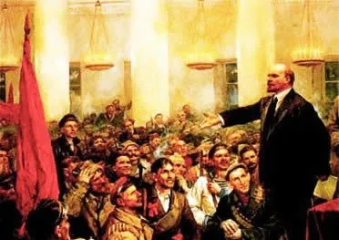

Revolução de Outubro
A Revolução de Outubro, também conhecida como Revolução de Bolchevique aconteceu em 1917 após um fracasso do Golpe de Kornilov, foi uma revolução com muitos protestos sendo assim a segunda fase da revolução da Rússia
Consequencias da Russia na primeira Guerra Mundial
Na capital o desemprego, a escassez de combustível e de alimentos, e a inflação agravaram-se. Para a maior parte da população, as condições de vida pioraram enquanto o Governo Provisório de Aleksandr Kerensky limitou-se a meras medidas administrativas. A reputação do presidente afundou-se junto com seu governo. Em ferreiro ocorreram intensas manifestações contra o governo provisório que já era combatido e criticado pelas massas populares dez do início do século 20, e ocorreram a multiplicações de sovietes.
A desmoronamento do Governo Provisorio e a entrada de Lenin
Além dos fracassos nos projetos de recuperação da economia interna, o governo provisório de fevereiro optou pela manutenção das tropas russas na Primeira Guerra Mundial. Tais fatos contribuíram para que Lênin ganhasse força.
Em abril Lenin retornou ao país defendendo as famosas Teses de Abril (paz, pão e terra), a paz era representada pela saída da Rússia da guerra, o pão representava o fim da fome e por último o desejo dos camponeses que era o fim da concentração fundiária e o acesso à terra, pondo fim a exploração da mão de obra camponesa
Durante a Terceira Conferência de Fábrica de Toda a Rússia, a maioria dos sovietes se mostrava completamente aliada a essa ideia de uma nova tomada de poder
25 de Outubro de 1975
No dia 25 de outubro de 1917, o soviete de Petrogrado promoveu uma insurreição organizada pelo seu Comitê Militar Revolucionário. O levante obteve sucesso e, dessa forma, Lênin passou a comandar o governo dos comissários do povo. A partir de então, o Partido Bolchevique passaria a controlar as cartas desse processo de transformação.
Lenin cumpriu todas as suas promessas e sua principal ação foi tirar a Rússia da guerra com um tratado de paz conhecido como Brest-Litovsk separadamente com a Alemanha e seus aliados, assim dedicaram a consolidação do socialismo na Rússia.
Então é isso! Espero que você tenha gostado do meu Site sobre a Revolução de Outubro e me de um 10